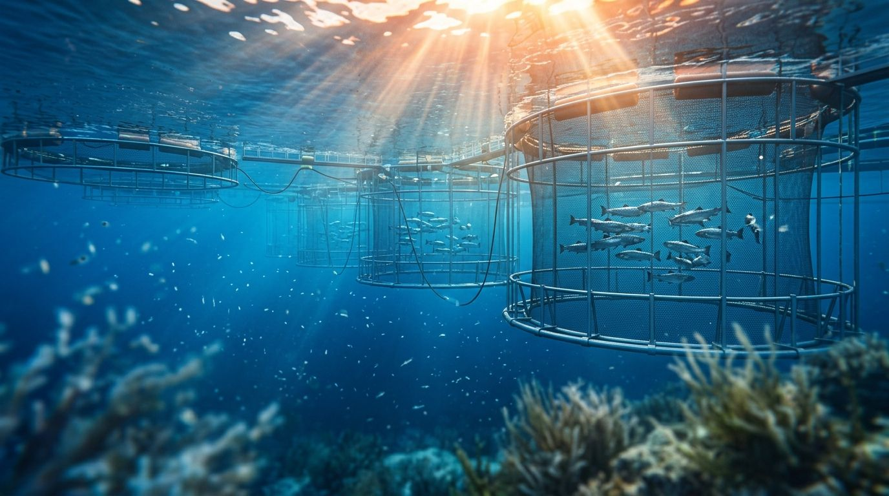
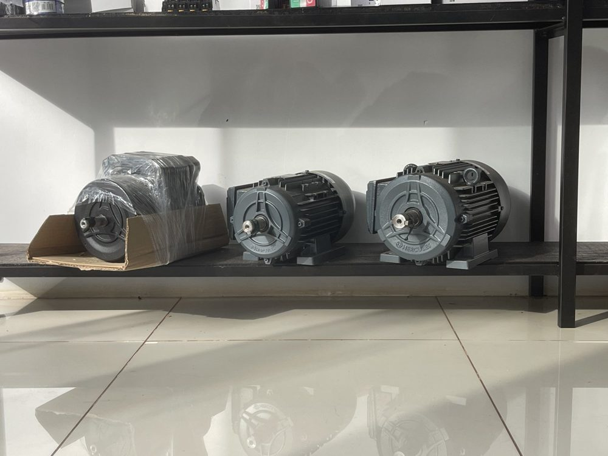
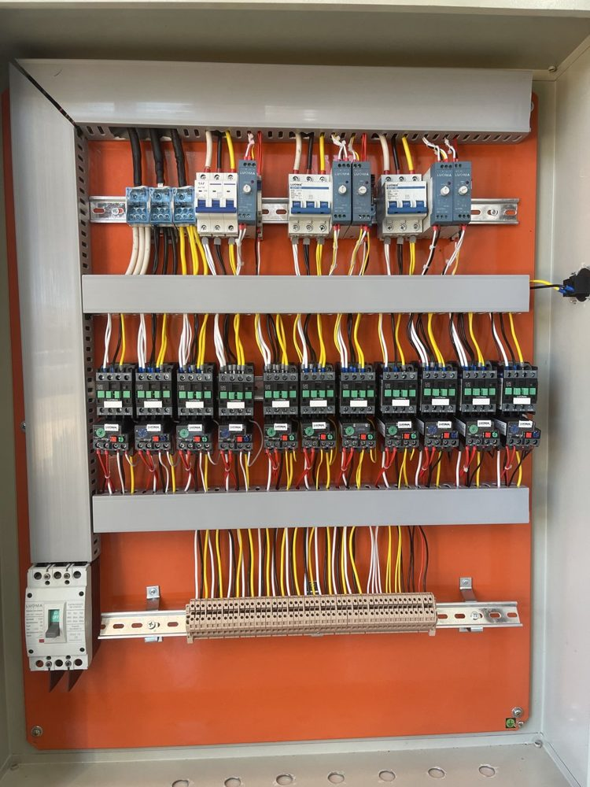
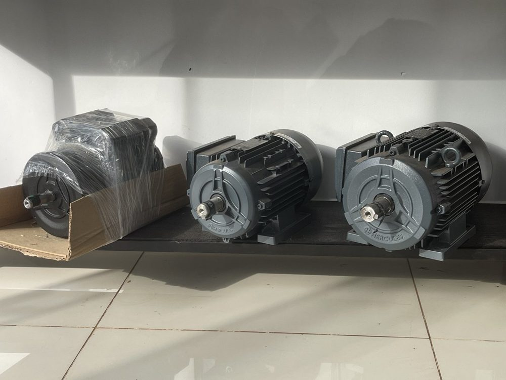
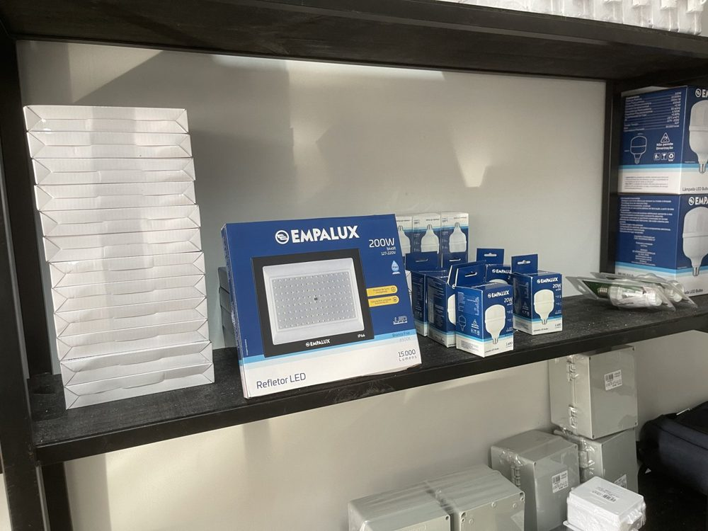
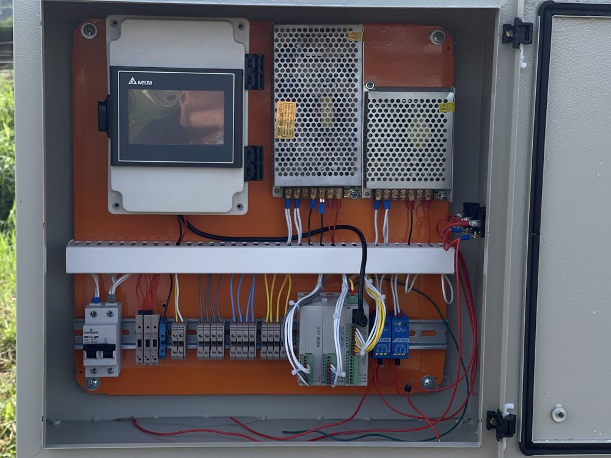
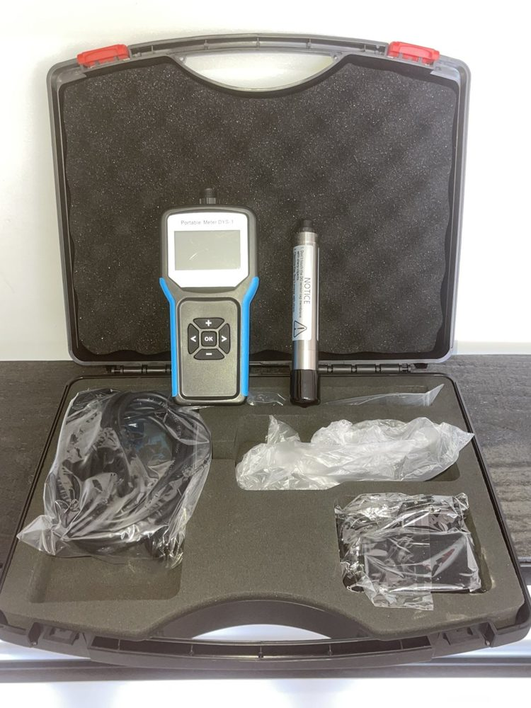
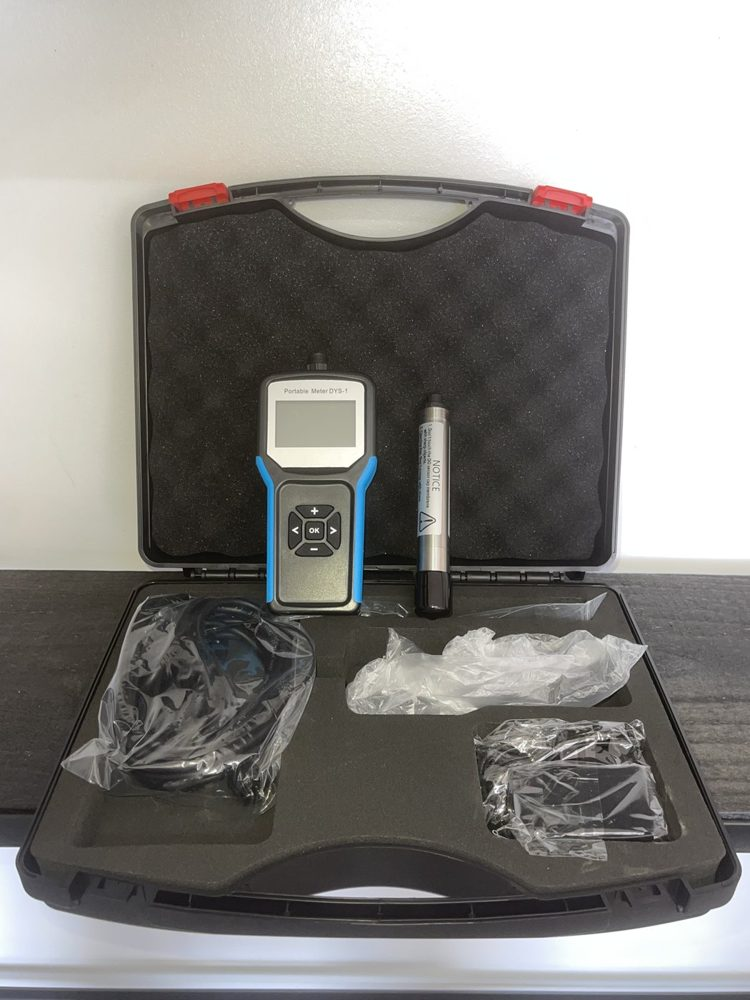

Novo Projeto
Conheça também nosso projeto para piscicultura
Monitoramento e controle automático de oxigênio em tanques, para o produtor dormir tranquilo.
Conhecer OxiLife Fish
Montagem de painéis, automação industrial e manutenção elétrica para propriedades rurais, indústrias e residências — com atendimento que vai até de madrugada, quando a lavoura ou a linha de produção não podem esperar.

Monitoramento e controle automático de oxigênio em tanques, para o produtor dormir tranquilo.
Conhecer OxiLife Fish
Atendemos produtores rurais, indústrias e residências com o mesmo padrão: planejamento técnico, execução limpa e suporte depois que a instalação está pronta.
Projeto e montagem de painéis sob medida, com componentes de nível industrial, para controle de motores, iluminação e processos.
Sistemas de automação que reduzem intervenção manual e aumentam a confiabilidade de processos contínuos.
Serviços elétricos completos para residências, com segurança e acabamento como prioridade.
Fornecimento e instalação de produtos Zagonel em diferentes modelos para o dia a dia da casa.
Problema elétrico não escolhe hora. Atendemos em horários especiais, inclusive de madrugada.
Serviço que deu origem à empresa: rebobinagem e manutenção de motores elétricos com precisão técnica.
Diagnóstico e reparo de bombas d'água para manter o abastecimento funcionando sem interrupções.
Venda de motores elétricos Hércules em diferentes modelos, potências e RPM, prontos para instalação.
Uma amostra de projetos entregues — do painel elétrico industrial ao material usado em cada montagem.







Um processo simples para você saber exatamente o que esperar em cada etapa do serviço.
Avaliamos a necessidade real — painel novo, manutenção ou automação — antes de fechar qualquer proposta.
Você recebe prazo e valores definidos, sem letras miúdas, antes do início do serviço.
Montagem e instalação com componentes de padrão industrial, mesmo em projetos residenciais.
“Trabalhamos com o compromisso de manter prazos e entregar qualidade — é assim que construímos confiança em cada propriedade e indústria que atendemos.
Começamos com rebobinagem de motores em 2018 e evoluímos para automação e projetos industriais completos.
Os mesmos materiais usados em painéis de indústria são aplicados também nos projetos residenciais e rurais.
Instalações testadas em condições reais de propriedades rurais — sol, chuva e uso constante.
UM PROJETO ELETROTECH MARECHAL
OxiLife Fish é o projeto da Eletrotech Marechal para piscicultura: sondas, painéis e alarmes que monitoram e controlam o oxigênio dissolvido nos tanques, para o produtor dormir tranquilo.

Um fluxo simples que transforma a leitura da água em decisão rápida — automática ou manual.
Oxigênio dissolvido e temperatura são lidos continuamente dentro do tanque.
Com base nos limites configurados, o painel aciona os grupos de aeradores automaticamente.
Pelo aplicativo ou direto no painel, veja o status em tempo real, onde estiver.
Cada leitura é gravada em pendrive, disponível para análise da lagoa a qualquer momento.
Da medição pontual ao controle automático contínuo — equipamentos pensados para o dia a dia do produtor.

Medidor manual de oxigênio dissolvido, temperatura e saturação — ideal para checagens rápidas em qualquer tanque.

Controle central com até três sondas conectadas, alarme de nível máximo e mínimo, e acesso remoto via aplicativo.

Sistema sem fio e wi-fi que avisa no celular em segundos se algo sair do esperado no tanque.
Qualquer falha de leitura ou nível fora do ideal dispara alerta imediato, evitando perdas na produção.
Ligue e desligue os grupos de aeração remotamente, sem precisar ir até o tanque.
Leituras gravadas em pendrive para analisar o comportamento da lagoa em qualquer período.
Defina o nível de oxigênio que deseja manter na lagoa e deixe o sistema fazer o trabalho.
Fale com a equipe OxiLife Fish e descubra o painel ideal para o tamanho da sua produção.